Web版YTT 導入方法
口座の登録から連携ツールの設置、Web版YTTへのログインまで。
画像のとおりに上から進めれば、約15分で使えるようになります。
※導入作業はPCで行います
利用規約 ※必ず目を通してください
口座の登録から連携ツールの設置、Web版YTTへのログインまで。
画像のとおりに上から進めれば、約15分で使えるようになります。
※導入作業はPCで行います
利用規約 ※必ず目を通してください
 Web版 機能概要
Web版 機能概要


スマホでもPCでも、ブラウザからYTTが使えます。
スマホでも有利なカスタマイズトレードが可能に
MT4 / MT5 / cTrader に連携ツールを入れておけば、ブラウザから注文・決済までできます。
 注文・決済シナリオ構築・予約注文オートラインコピーモード通知・トレードノート経済指標表示 ほか
注文・決済シナリオ構築・予約注文オートラインコピーモード通知・トレードノート経済指標表示 ほか連携ツールは、Web版YTTで押した注文を取引ツール（MT4 / MT5 / cTrader）に伝えて、実際に注文を出す役目です。そのため MT4 / MT5 は利用中もPCを起動したままにしてください（cTrader Cloud版はPCを閉じてもOK）。
詳しい機能は、Web版YTTの使い方ページ（準備中）で紹介します。
 動作環境
動作環境

Web版YTTはスマホ・PCのブラウザで使います。
注文を出す取引ツール側の環境もあわせて確認してください。
| 開く端末 | スマホ（iPhone / Android）・PC のブラウザ | スマホは、Androidなら「インストール」、iPhoneなら「ホーム画面に追加」して使うのがおすすめ |
|---|---|---|
| 取引ツール | MT4 / MT5 / cTrader / cTrader Cloud | Web版YTTとつなぐ連携ツールを入れます（1口座につき1つ） |
| 利用中のPC | 起動したまま | MT4 / MT5 / cTrader は、PCのスリープや終了で止まります。cTrader Cloud版はPCを閉じてもOK |
| 通信環境 | 安定した高速インターネット回線 | |
| 使用可能者 | メンバーシップ or サブスク加入者 | |
| 証券会社・プロップ | HFM、Axiory、ThreeTrader、Fundora、Fintokei、Funded7、楽天証券 | 他の証券会社・プロップファームでの動作はテストしていません |
YTT使用おすすめ
まだ取引口座を持っていない方は、YTTを使えることを確認している次の会社がおすすめです。
証券会社（ブローカー）
プロップファーム
口座ができたら、上の質問で、口座を作った取引ツールを選んで進めてください。
動画で見る
STEP 1〜3 の流れを、動画で通して見られます。
画像で確かめながら進めたい方は、このまま下の手順へ進んでください。
事前準備（MT4）
すでにMT4を使っている方は読み飛ばしてOKです。
お使いの証券会社・プロップファームで口座開設後、それぞれのHPよりMT4をダウンロードします。MT4を開き、口座開設後にメールで届いた口座情報でログインします。まだ口座を持っていない方は、こちらを見てください。
MT4左上の「ファイル」→「取引口座にログイン」
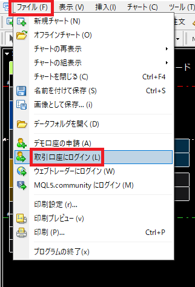
ログインID・パスワード・サーバーを入力して「ログイン」
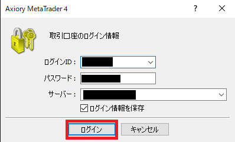
ログインすると、MT4左上に口座番号が表示されます（ログインID＝MT4口座番号）。
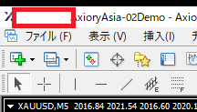
STEP 1
取引ツールに入れる連携ツールと、あなたの口座を結び付ける「32文字の認証コード」を受け取ります。
ブラウザが立ち上がるので、口座番号を入力して「登録」
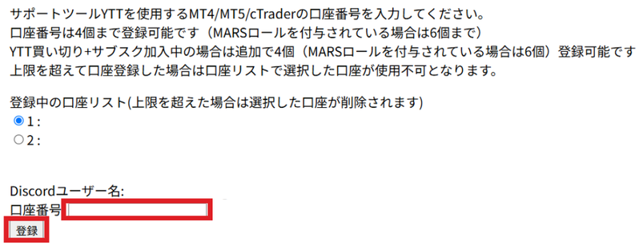
「口座番号○○を登録しました」と出たら、もう一度「口座登録ページを開く」
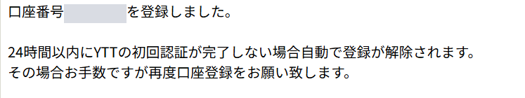
この画面には、まだ認証コードは出ません。ブラウザの「戻る」は押さずに、下のボタンからもう一度口座登録ページを開いてください。
いちばん上に表示された32文字の認証コードを控える
下の「登録中の口座リスト」に、さっき登録した口座番号が追加されています。このコードは STEP 2 の連携ツールの設定で入力します。メモ帳などに控えておいてください。
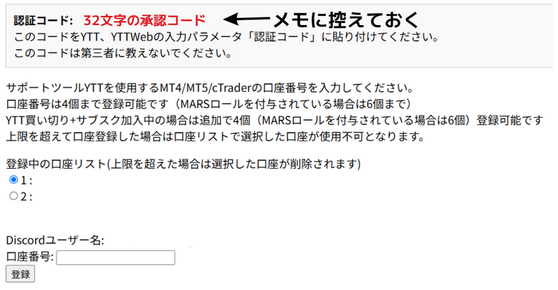
認証コードは他人に教えないでください。他人に知られると、あなたの口座に対して操作される可能性があります。
STEP 2（MT4）
連携ツールは、Web版YTTで押した注文を取引ツールに伝えるツールです。
入れ方は、これまでのYTTと同じです。
zipファイルを解凍する
解凍すると、取引ツールごとのフォルダが入っています。お使いの取引ツールのフォルダだけ使います。
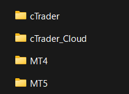
MT4フォルダの中身は次の2つです。
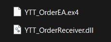
MT4を開き、「ファイル」→「データフォルダを開く」
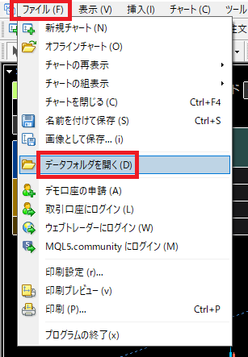
フォルダ中の「MQL4」→「Experts」へと進む
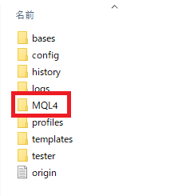
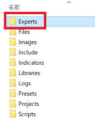
その中に「YTT_OrderEA.ex4」を移す（もしくはコピー＆ペーストする）
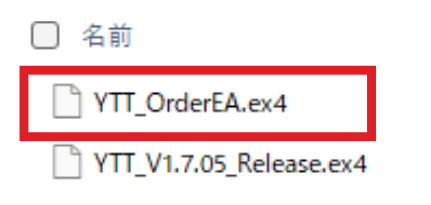
戻って、フォルダ中の「MQL4」→「Libraries」へと進む
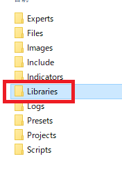
その中に「YTT_OrderReceiver.dll」を移す（もしくはコピー＆ペーストする）
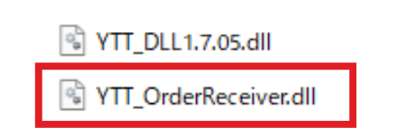
MT4右上の「×」で閉じ、もう一度MT4を立ち上げる
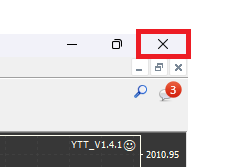
STEP 2（MT4・続き）
連携ツールは必ず1つのチャートだけに入れてください。
MT4を開き、左上にある気配値表示のアイコンをクリック
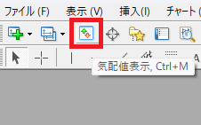
MT4左側に気配値表示（通貨ペア名が並ぶ）が表示されます。
気配値表示上で右クリック →「すべて表示」
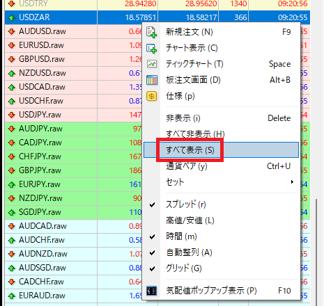
灰色ではなく黒色の通貨ペア名の中から、1つだけ通貨ペアを選びます。
通貨ペア名をMT4右側の空間にドラッグ＆ドロップ
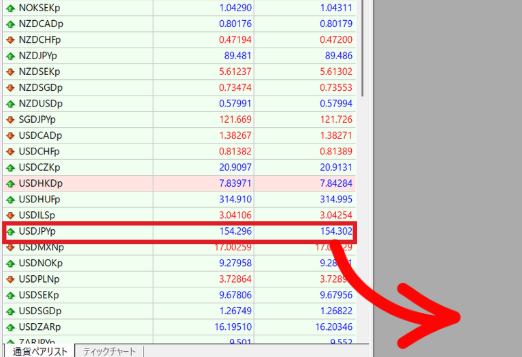
下の画像のようにチャートが表示されます。
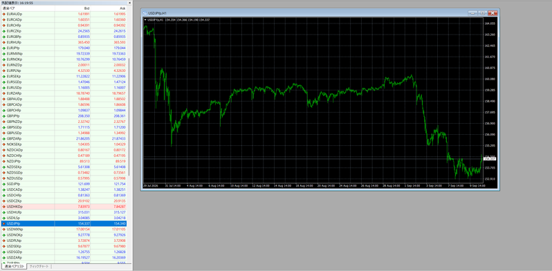
連携ツールを入れるチャートは1枚だけです。複数のチャートに入れると、先に設定した方が切断されます。
MT4左上にあるナビゲーターのアイコンをクリック
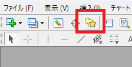
「エキスパートアドバイザ」の左にある「＋」をクリック
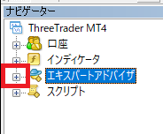
前の段階で Experts フォルダに入れた連携ツールが表示されます（名前は YTT_OrderEA）。
「YTT_OrderEA」を右クリック →「チャートに表示」
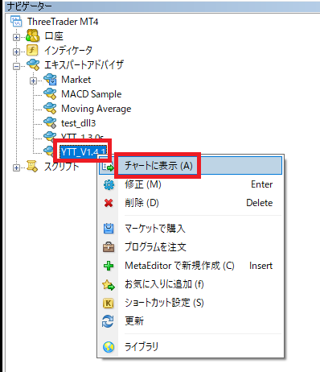
「全般」タブ →「自動売買を許可する」にチェック →「DLLの使用を許可する」にチェック
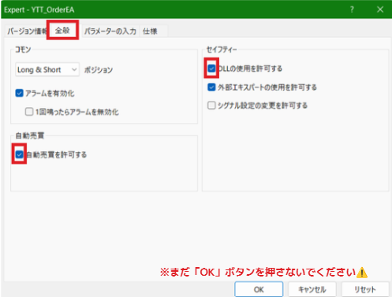
「パラメーターの入力」タブで、認証コードなどを入力して「OK」
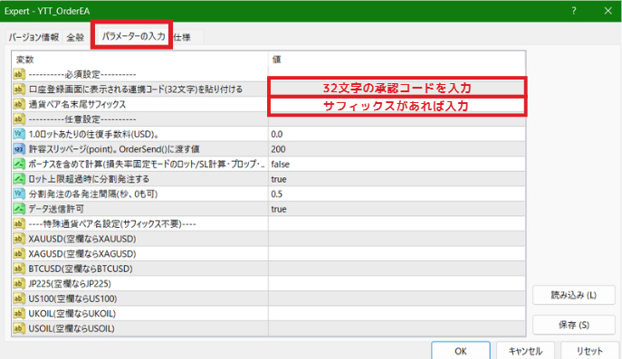
入力するのは必須設定の2つだけです。
| 口座登録画面に表示される連携コード（32文字）を貼り付ける | STEP 1 で控えた32文字の認証コードを貼り付けます |
|---|---|
| 通貨ペア名末尾サフィックス | 通貨ペア名の末尾に文字が付いている口座では、その文字を入力します。 例：Fintokei の USDJPYp → p ／ HFMプロ口座の USDJPYr → rサフィックスが無い口座は空欄のままでOK |
XAUUSD の欄に GOLD）。空欄のときは XAUUSD や USOIL のような標準の名称が使われるので、同じ名前なら空欄でOKです。MT4左上にある「自動売買」をクリックして緑色の状態にする
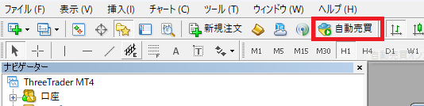
認証に成功したら、MT4を再起動する
「初期設定が完了したので再起動してください」という案内が表示されます。案内に従って、MT4右上の「×」で閉じ、もう一度立ち上げてください。
再起動後、チャート上の表示が「承認待ち（webyttで端末を承認してください）」になれば STEP 2 は完了です。
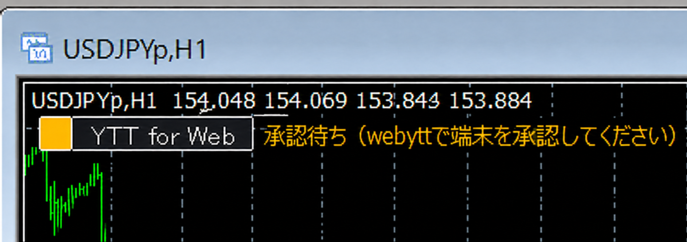
STEP 3
スマホでもPCでも、ブラウザから使えます。
Web版YTTにアクセスする
「Discordでログイン」を押す
ログインしていない状態でアクセスすると、下の画面が表示されます。
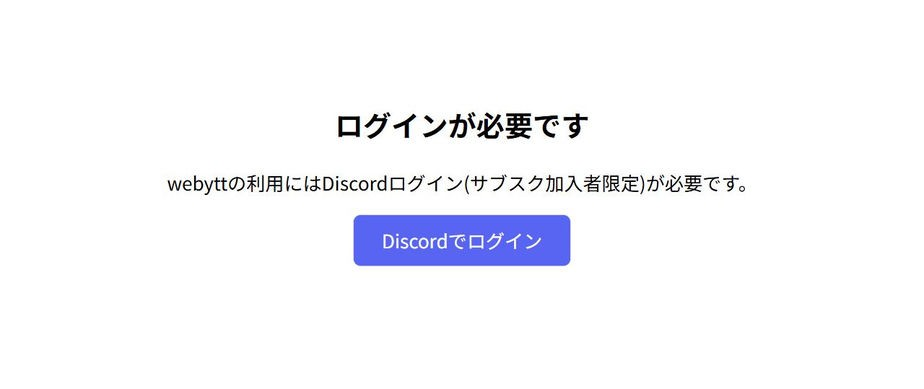
「口座を選択」画面で、承認した口座を選んで「確定」
STEP 1 で登録し、連携ツールを入れた口座番号を選んで、下の「確定」を押してください。
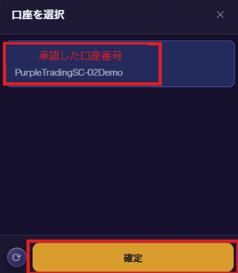
「新しい端末を検出しました」と出たら「この端末を承認する」
初めてつなぐときは、取引ツールの接続を確認する画面が出ます。
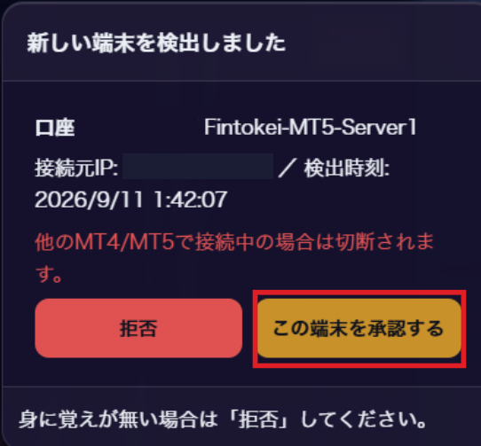
数秒待って、接続状態を確認する
口座番号の左にある丸の色が接続状態を表します。緑になっていれば接続完了です。このとき、取引ツールのチャート上の表示も「承認待ち」から「接続済み」に変わります。
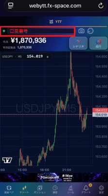
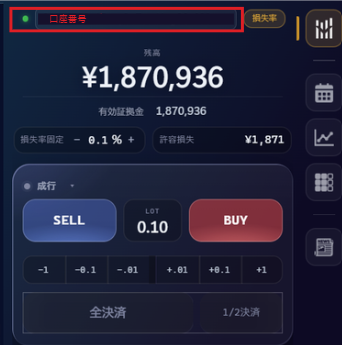
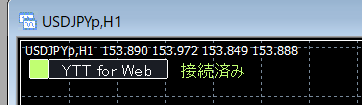
| 緑 | 正常に接続されています。そのまま利用できます |
|---|---|
| 黄 | 接続はあるが価格が取れていません。取引する通貨ペアを気配値表示欄に出してください |
| 赤 | 接続されていません。ページをリロード。改善しない場合は下の「よくある質問」へ |
以上で導入は完了し、Web版YTTが使用できます。お疲れ様でした！
おすすめ
ホーム画面に置いておくと、アドレスバーが消えて画面が広く使え、1タップで開けます。

追加すると、ホーム画面にこのアイコンができます
はじめに確認
「動かない」と感じたときは、まずここを確認してください。
次の2つはしないでください。
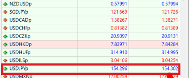
通貨ペア情報を取得できていません XAUUSD: 404 / symbol_not_found 残高・ロット計算等が古い値のままの可能性があります。
取引する通貨ペアを気配値表示欄に出しておいてください。出していないと価格が取得できず、アイコンが黄になります。
連携ツールが止まっているとき、PCのスリープ中、取引ツールを閉じている間は動きません。
よくある質問
次のいずれかが原因のことが多いです。ひとつずつ確認してください。
①認証コード（32文字）の入力ミス（前後の空白、全角・半角の混在）
②連携ツールを複数のチャートに入れている（1つのチャートだけに入れます）
③自動売買の許可をしていない（許可する箇所は2つあります）
④DLLの使用許可をしていない
⑤MT4を再起動していない
⑥メンバーシップ／サブスクに加入していない
DLLの使用が許可されていません。次の2か所を確認してください。
①連携ツールの設定画面の「全般」タブで「DLLの使用を許可する」にチェック
②MT4上部のメニュー「ツール」→「オプション」→「エキスパートアドバイザ」タブで「DLLの使用を許可する」にチェック
それでも出る場合は、「MQL4」→「Libraries」に YTT_OrderReceiver.dll が入っているか確認してください。
Web版YTTにログインし、「口座を選択」でその口座を選んで「確定」を押してください。「新しい端末を検出しました」と出たら「この端末を承認する」を押します（STEP 3）。
①ページをリロードする
②MT4が起動していて、連携ツールが動いているか
③PCがスリープしていないか
④同じ口座に、別の連携ツールを後から入れていないか（先に設定した方が切断されます）
価格が取得できていません。取引する通貨ペアを気配値表示欄に表示してください。
①サフィックス付きの口座（USDJPYp など）で「通貨ペア名末尾サフィックス」を入力しているか
②CFD系商品は、証券会社の商品名（GOLD など）を「特殊通貨ペア名設定」に入力しているか
①DLLの使用許可をしていない
②DLLの名前がオリジナルファイル（YTT_OrderReceiver.dll）と異なっている（末尾に（1）が付いているなど）
③「MQL4」→「Libraries」中のDLLファイルがセキュリティソフトにより削除／中身が空白になっている
③の場合はこちら等を参考に除外処理をおこなってください（Windowsセキュリティ以外の場合は各自除外処理の方法をお調べください）。
新しい連携ツールが配布されたときは、ファイルをダウンロードしてお使いの取引ツールの導入方法ページで「STEP 2」の手順をもう一度行ってください。
困ったときは
導入や使い方で迷っても、ここから解決できます。
上で解決しなかったものは、以下の内容を 「お問い合わせ」 に送ってください。
| 口座 | 証券会社・口座タイプ・有効証拠金残高 | Web版YTTで使用している口座番号も |
|---|---|---|
| 環境 | OS（MacかWindows）・スマホの機種 | 連携ツールのバージョン（例：YTT_OrderEA 1.00） |
| 内容 | 困っていることをできるだけ具体的に | 症状発生時のスクショ、ターミナル→エキスパートタブのスクショ |
| ※必須 | エラーのコピー | エラーが出ていた場合、エキスパートタブに出ていたエラーの文字をコピーして貼り付け |